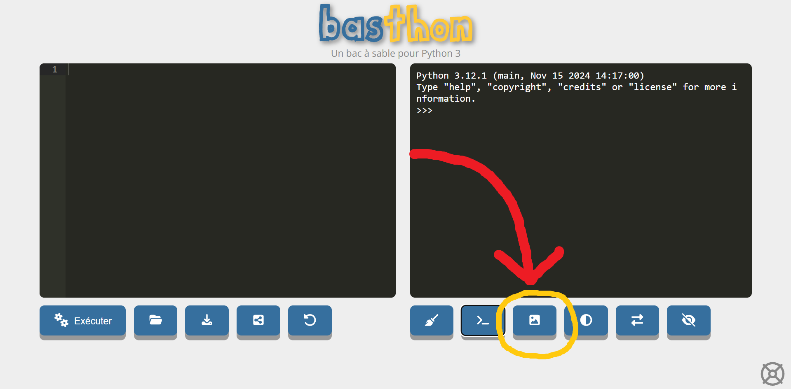

Sommaire :
navigation rapide
Sommaire :

1) Première étape
première étape: importer la bibliothèque turtle.
C'est la bibliothèque qui permet de faire des dessins de base.
Cette bibliothèque est également assez simple d'utilisation.
from turtle import *
2) Les commandes de base
Turtle permet de dessiner sur un tableau blanc à l'aide d'une flèche applée tortue (turtle en anglais).
Nous disposons de quelques commandes pour diriger la tortue sur l'ecran.
(Oui ici on parle maintenant en pixels pour simplifier sur les nombreux apprreils)
x peut être nimporte quelle valeur même des valeurs négatives ce qui fera reculer la tortue.
forward(x)
left(x)
Vers la gauche
right(x)
circle(x)
penup()
Descendre le stylo
pendown()
color('red')
3) Le mot clef done()
Il ne faut pas oublier le mot clef done() à la fin du code.
Il permet de dire a la tortue que l'on a fini de lui donner des instructions et qu'elle peut les réaliser.
from turtle import *
# le code des actions de la tortue
done()
Le # dans les code python permet de mettre du texte qui sera ignoré.
Cela permet de dire a quoi sert certaines lignes de code.
4) Un site web
Basthon est un site web qui émule python gratuitement.
Ce site permet de programmer facilement.
La partie qui nous interesse est la partie graphique pour déplacer la tortue.
Pour afficher l'image, il vous suffit de cliquer ici.

1) Les variables
Les varibles sont des sortes de boîtes dans lesquelles nous pouvons
stocker des informations.
Par exemple nous pouvons stocker la longueur du coté du carré dans la variable cote.
from turtle import *
cote = 50 # ici on défini que cote vaut 50
forward(x)
# ici on utilise notre variable pour dire à la tortue d'avancer de 50 pixels
done()
nous poouvons aussi stocker du texte et plein d'autres choses.
2) Les boucles de base
La boucle for de base permet de répéter des actions.
Pour indiquer les informations à executer nous décalerons les informations d'un tab (touche a gauche avec des flèches sur la gauche du clavier)
# le code
# la boucle ici on répète 10 fois
for _ in range(10):
# les éléments à répéter
# la suite du code
3) Les opérations
différentes opérations sont disponibles sur les variables.
On utilisera les variables a et b qui sont des chiffres.
| L'opération | L'opération en python |
|---|---|
| l'addition |
|
| la soustraction |
|
| la multiplication |
|
| la division |
|
Consignes
Exercice 1
A l'aide de la bibliothèque turtle dessiner un carré.